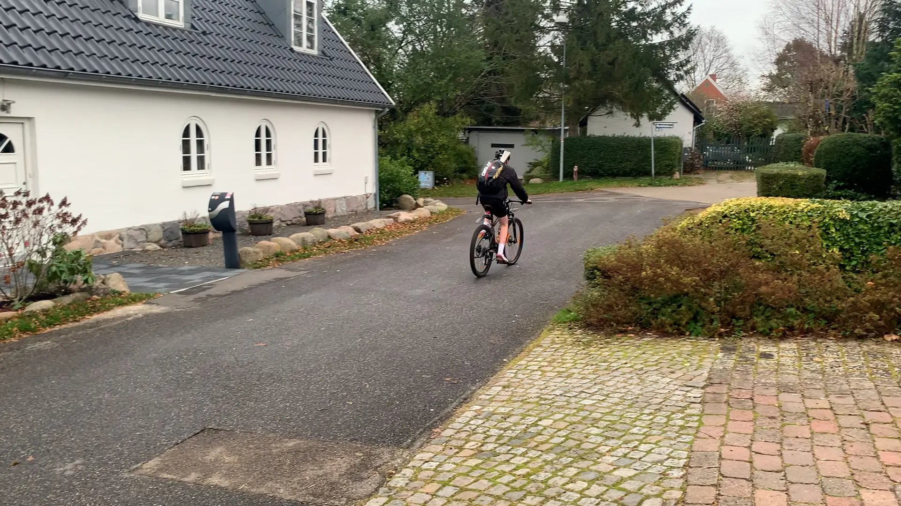

Passion for badminton

Medvirkende: Laurits Goltermann
Som 5-årige startede Laurits til badminton. Han har nu gået til sporten i 8 år. Han træner op til flere gange om ugen, både morgen og aften. Laurits elsker sin sport og drømmer om at spille mod de professionelle og komme op i toppen af ligaen.